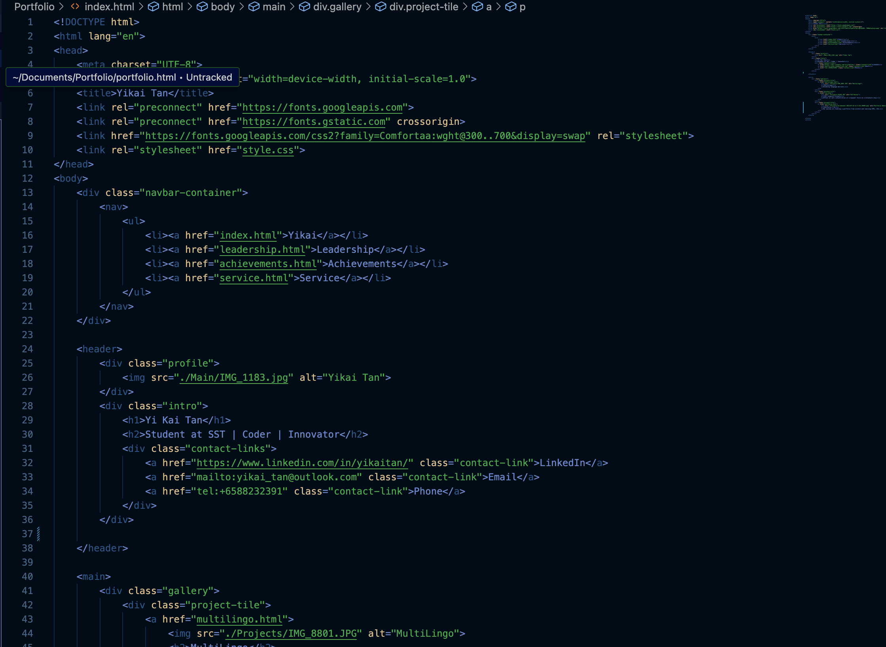

Navigation
Web Development
Portfolio 1.0
My First Steps into Web Development

Project Motivation
Creating this website was my gateway into web development. It motivated me to learn HTML structure, CSS styling, and industry-standard tools like GitHub for version control and hosting. This foundational project sparked my passion for creating digital experiences.
Learning Approach
I leveraged AI assistance and online resources to accelerate my learning process, focusing on practical implementation while understanding core web development principles. This self-directed approach taught me valuable research and problem-solving skills.
HTML5
CSS3
JavaScript
GitHub Pages

Learning Journey
Through this project, I mastered the fundamentals of HTML structure and CSS styling. I learned how to create semantic markup, implement responsive design principles, and organize stylesheets effectively for maintainable code.
AI-Assisted Development
Using AI as a learning companion, I improved my prompt crafting skills and learned to ask better questions. This approach accelerated my understanding of web development concepts and best practices, enabling rapid skill acquisition.
Core Skills Developed
- HTML structure and semantic markup
- CSS styling and layout techniques
- Version control with Git and GitHub
- Effective AI collaboration for learning
- Web hosting and deployment strategies
From Foundation to Advanced
Portfolio 1.0
Basic HTML/CSS foundation
Evolution
Enhanced skills and knowledge